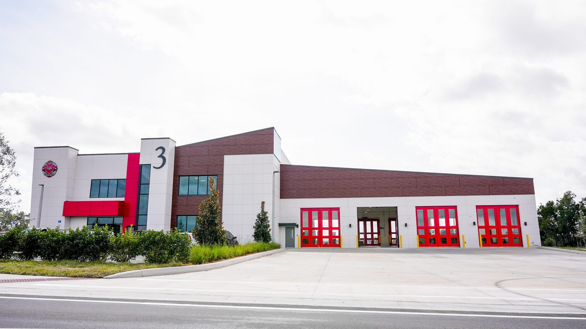

Florida Building Code is the single biggest driver of commercial glazing specifications in the state. It determines which products can be used, how they are tested, what documentation has to accompany the permit application, and how inspectors verify compliance in the field. The current enforceable code is the 8th Edition (2023) Florida Building Code, which began enforcement in late 2023 and remains in effect through the 2026 construction cycle. This article covers FBC 2023 as it applies to commercial glazing, including HVHZ versus non-HVHZ wind zones, NOA requirements in Miami-Dade, TAS 201/202/203 testing, Florida Product Approval, energy code provisions, and the commercial permitting workflow from submittal through final inspection. Statewide code path and office map: Florida commercial glazing hub. Send Us Plans for a 48-hour bid.

Current Code Status: FBC 2023 in 2026 Enforcement
Florida Building Code is updated on a three-year cycle. The 8th Edition (2023) was adopted in 2023, with compliance required for permits pulled after the effective date of late 2023. FBC 2023 remains in force through 2026, with the 9th Edition expected to adopt in 2026 and begin enforcement in 2027. For any commercial project currently in design or construction, FBC 2023 is the governing document.
Key changes from FBC 2020 to FBC 2023 that affect commercial glazing:
- Updated wind maps reflecting current hurricane climatology in some coastal counties
- Refined impact-rating thresholds for wind-borne debris regions
- Energy code (Chapter 13, FBC Energy Conservation) updates to U-factor and SHGC targets for commercial fenestration
- Accessibility chapter refinements aligned with 2010 ADA Standards for Accessible Design
- Clarified NOA and Florida Product Approval documentation requirements for permit submission
HVHZ vs Non-HVHZ Wind Zones
FBC divides Florida into wind hazard regions that determine which glazing approval regime applies:
HVHZ (High-Velocity Hurricane Zone)
Miami-Dade and Broward counties are designated HVHZ under FBC. Design wind speeds are the highest in the state, reaching 170 mph and higher depending on specific location and building risk category. Commercial glazing in HVHZ must carry a current Miami-Dade Notice of Acceptance (NOA) issued by Miami-Dade Building Code Compliance Office. The NOA documents that the product has been tested and approved to HVHZ standards, and it references the specific testing protocols (TAS 201, TAS 202, TAS 203) that the product passed.
Non-HVHZ Wind-Borne Debris Region
Most of coastal Florida outside HVHZ (Palm Beach County, Indian River County, coastal Gulf counties, etc.) falls into the wind-borne debris region. Design wind speeds vary by location and range typically from 140 to 170 mph. Impact-rated glazing is required but follows the statewide Florida Product Approval (FL number) regime, with ASTM E1886/E1996 testing protocols rather than TAS.
Non-Wind-Borne-Debris Region
Inland Florida and some coastal zones with lower wind exposure fall outside the wind-borne debris region. Impact-rated glazing is not required by code, though many commercial projects specify it anyway for insurance and quality reasons. Standard structural wind loading still applies and determines design pressures.
Miami-Dade NOA Requirements
The Miami-Dade NOA is the toughest commercial glazing approval to obtain. To secure an NOA, a product must:
- Pass Miami-Dade Testing Application Standard (TAS) protocols, specifically TAS 201 (large missile impact), TAS 202 (uniform static air pressure), and TAS 203 (cyclic wind pressure loading)
- Be tested by an approved independent laboratory
- Submit engineering calculations and product data for review
- Receive formal Notice of Acceptance issued by Miami-Dade Building Code Compliance Office
- Renew the NOA on the schedule specified (typically 5 years with ongoing compliance testing)
The NOA lists the approved configurations, frame sizes, glass makeups, anchor patterns, and design pressures. Using a product outside the NOA's approved configurations voids the approval and requires a deviation review or site-specific engineering. See our HVHZ glazing requirements guide for additional detail.
TAS 201, 202, and 203 Testing Protocols
TAS 201: Impact Testing
TAS 201 tests the assembly's ability to withstand a 9-pound 2x4 lumber missile impact at 50 feet per second (Level D) or 80 feet per second (Level E for essential facilities). The missile is fired at specific impact points on the assembly, including corners, center of glass, and frame-to-glass transitions. The assembly passes if no penetration occurs and if any post-impact cycling does not cause failure.
TAS 202: Uniform Static Air Pressure
TAS 202 applies uniform pressure to the assembly both positive (pressing against the assembly) and negative (pulling away), up to the design pressure rating. The assembly must resist the design pressure without excessive deflection, glass failure, frame deformation, or perimeter seal compromise. Pressures are applied in specified increments with hold times.
TAS 203: Cyclic Wind Pressure
TAS 203 cycles the assembly through thousands of pressure reversals simulating the pulsing wind conditions of a hurricane. This test catches fatigue failures that do not appear in static testing but happen in real-world hurricane conditions. Assemblies that pass static TAS 202 but fail TAS 203 are common; the cyclic test is genuinely demanding.
Florida Product Approval (FL Numbers)
Outside HVHZ, commercial glazing products use the statewide Florida Product Approval (FL number) regime managed by the Florida Department of Business and Professional Regulation (DBPR).
Testing Under Florida Product Approval
Florida Product Approval accepts ASTM E1886 (air infiltration, water penetration, structural performance) and ASTM E1996 (wind-borne debris impact) as the primary testing standards. Commercial glazing for non-HVHZ wind-borne-debris regions must have a current FL number demonstrating that the assembly passed these tests at the design pressure and missile level required for the project.
Permit Documentation
Florida Product Approval compliance is documented at permit submission by including the FL number for each approved product, the installation instructions from the FL documentation, and engineering calculations showing the product approval envelope covers the project conditions. Inspectors verify the installed product matches the FL number submitted.
See our Florida Product Approval guide for detailed workflow.
Florida Building Code Energy Conservation
Chapter 13 of FBC (Energy Conservation) governs commercial fenestration energy performance. Key commercial glazing requirements:
| Metric | FBC 2023 Commercial Target (Climate Zone 1/2) | Notes |
|---|---|---|
| U-factor (maximum) | 0.50 fixed / 0.55 operable | For non-metal framed; metal-framed slightly higher |
| SHGC (maximum) | 0.25 (0.30 with shading) | South and west-facing often require lower SHGC |
| Visible Transmittance (VT) | Minimum varies with daylighting credit | Higher VT earns daylighting credit |
| Air Leakage | 0.30 cfm/ft² max | Per NFRC 400 or equivalent |
Florida is in ASHRAE Climate Zones 1 (Keys) and 2 (mainland peninsula), both cooling-dominated climates. Low SHGC glazing matters more than low U-factor in Florida, because cooling load reduction comes primarily from rejecting solar heat gain. See energy-efficient commercial glass Florida code for detail.
Accessibility Requirements
FBC Chapter 11 (Accessibility) incorporates the 2010 ADA Standards for Accessible Design. For commercial glazing, the key provisions:
- Door clear width 32 inches minimum
- Threshold maximum 0.5 inch with bevel on top 0.25 inch
- Hardware in 34 to 48 inch operable range
- Maximum 5 pounds operating force on interior accessible doors
- Safety glazing in hazardous locations per FBC 2406
- Visibility marking on all-glass doors
See ADA compliance for commercial glass doors for complete walkthrough.
Commercial Permitting Workflow
A typical commercial glazing permit workflow in Florida:
- Submittal preparation: the glazing contractor assembles shop drawings, product approvals (NOA or FL numbers), engineering calculations stamped by a Florida PE, and energy code documentation.
- Permit application: the GC or owner submits the glazing package as part of the overall building permit application or as a subsequent revision if the glazing was delegated design.
- Plans review: the jurisdiction's plans examiner reviews for code compliance, typically 2 to 6 weeks depending on workload. Comments come back for correction or resubmission.
- Permit issuance: once plans review is clean, the permit issues and fabrication can begin (though many contractors start long-lead fabrication earlier at risk).
- Field inspections: jurisdictions typically inspect anchorage, installation, and final. Some jurisdictions add intermediate inspections for curtain wall and complex assemblies.
- Final inspection and Certificate of Occupancy: all inspections pass, the glazing contractor submits closeout documentation (product approvals, warranty certificates, as-built drawings), and the CO issues.
Jurisdictional Variations
Florida has over 400 local building jurisdictions, and enforcement varies. Miami-Dade and Broward are the most rigorous due to HVHZ requirements. Large county jurisdictions (Palm Beach, Hillsborough, Orange) tend to be structured and predictable. Smaller municipal jurisdictions can be unpredictable; working with a glazing contractor who has current relationships in the specific jurisdiction saves weeks on permit and inspection timelines.
Common FBC Commercial Glazing Pitfalls
- Submitting with an expired NOA or FL number; approvals expire and must be current at time of permit
- Using a product outside its approval envelope (larger size, different anchor pattern, different glass makeup)
- Missing the energy code calculations; the permit stalls without them
- Specifying non-safety glass in hazardous locations; often caught at plans review but sometimes slips through
- Failing to stamp shop drawings with a Florida PE when required; engineering review cannot proceed
- Missing accessibility review on storefront doors; flagged at plans review or at final inspection
Code-Compliant Glazing Delivery
ACG's submittal and permit workflow is structured to catch FBC compliance issues before they become schedule problems. Every commercial project we scope includes confirming NOA or FL approval coverage, engineering stamp requirements, energy code compliance, accessibility review, and jurisdiction-specific pre-submittal coordination. For GCs and owners working on commercial projects anywhere in Florida, send plans to contact or call (772) 486-7711 for a scope that reflects current FBC 2023 requirements. CGC1531993, three Florida West Palm Beach headquarters.